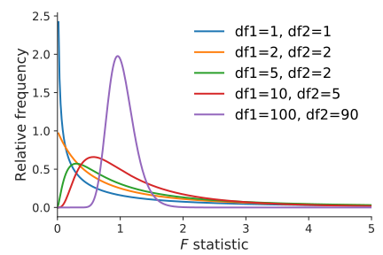
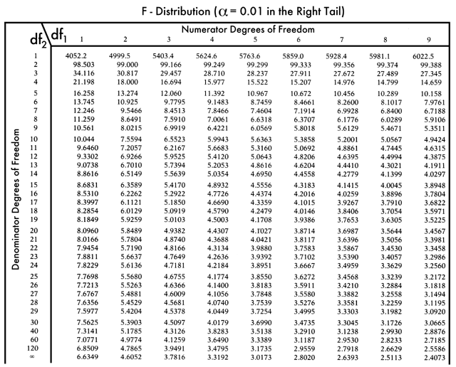

Linear modeling with "fixed effects"
F-statistic
Khris Griffis, Ph.D.
October 23, 2024
CSULA: ME3040 Fall 2024
Linear modeling with "fixed effects"
F-statistic
Previously, we explored inference about the difference in central tendencies of 2 groups.
How do we perform hypothesis testing for a difference in central tendency across more than two categories?
Could a similar approach to 2-groups work for multiple categorical variables be applied?
It's not that simple!
We must consider the variability of the data and how they relate to their own group as well as all the other groups.
In which panel are the differences between groups most apparent?
While the variability between groups in the two panels are similar, the increased variability of the data within the groups (right panel) makes it harder to differentiate the different groups.
We must consider the variability of the data and how they relate to their own group as well as all the other groups.
In which panel are the differences between groups most apparent?
While the variability between groups in the two panels are similar, the increased variability of the data within the groups (right panel) makes it harder to differentiate the different groups.
An assessment of the difference in means between several groups depends on two kinds of variability:
Just knowing the sample means for the groups is not enough. If the values within each sample are very close to each other, we can detect a small difference in means as significant (as in the left panel). If there is more variability in the samples (as in the right panel), we need the group means to be farther apart.
Why analyze variability to test for a difference between multiple means?
If the null hypothesis is true (no difference between the sample means), the samples ALL come from the same underlying population.
If we select samples of size eight from a population where the mean is 38, how likely is it to see sample means as different as 30.75, 34.0, and 49.25?
We address both of these issues by measuring different aspects of the variability in the data.
Let's investigate the different aspects of variability in data.
We want a single measure that reflects how far apart the means are for all groups, without the need to calculate the difference between all the pairs of group means (as the number of groups increases, the number of pairs would increase even more).
We could calculate how far each group mean is from the "Grand mean" (the overall combined mean) instead.
Variability between groups:
distance from each group means to the Grand Mean.
Variability within groups:
distance from each data point to the Sample Mean.
Total variability:
distance from each data point to the Grand Mean.
Intuitively, for the same total variability, the greater the variability between groups will be compared with the variability within groups, the more likely the groups will be different from one to another.
An ANalysis Of VAriance (ANOVA) is a comparison between the variability between groups to the variability within groups. The statistic of interest that reflects this comparison between the two types of variability when performing an ANOVA is the F-statistic.
Total Variability
Between Groups Variability
Within Groups Variability
Each of these variabilities relies on the calculation of the sums of squares ($SS$) deviations.
Total Variance $SS_{\mathrm{Total}}$
Between Groups Variance $SS_{\mathrm{Groups}}$ (a.k.a $SS_{\mathrm{Between}}$)
"Error" Variance $SS_{\mathrm{Error}}$ (a.k.a. $SS_{\mathrm{Within}}$)
$$\sum_{i=1}^{n}(x_{i}-\hat{x})^2$$
$$\sum_{g=1}^{k}n_{g}(\bar{x}_{g}-\hat{x})^2$$
$$\sum_{g=1}^{k}\sum_{i=1}^{n_g}(x_{gi}-\bar{x}_{g})^2$$
The $F$-statistic is a ratio of the variability between groups and the variability withing groups, but uses the mean variability instead of the total variability for each component.
$F=\frac{\class{danger}{\textrm{Mean variability between groups}}}{\class{info}{\textrm{Mean variability within groups}}}$
$F=\frac{\class{danger}{\textrm{Mean SS}_{Group}}}{\class{info}{\textrm{Mean SS}_{Error}}}= \frac{\class{danger}{\frac{\textrm{SS}_{Group}}{(k-1)}} }{\class{info}{\frac{\textrm{SS}_{Error}}{(n-k)}}}$
Notes
$ F=\frac{ \class{danger}{\frac{\textrm{SS}_{Group}}{(k-1)}} }{ \class{info}{\frac{\textrm{SS}_{Error}}{(n-k)}} }=\frac{ \class{danger}{\frac{\sum_{g=1}^{k}n_{g}(\bar{x}_{g}-\hat{x})^2}{(k-1)}} }{ \class{info}{\frac{ \class{info}{\sum_{g=1}^{k}\sum_{i=1}^{n_g}(x_{gi}-\bar{x}_{g})^2} }{ (n-k) }} } $
$\bar{x}_g$: the mean of each group
$n_g$: sample size for each group
$\hat{x}$: Grand mean
Recall the formula for computing a standard deviation is: $s=\sqrt{\frac{\class{success}{\sum(x_{i}-\bar{x})^2}}{n-1}}$.
With a little algebra, we can turn this into an easy formula for computing the sum of squared deviations from the group mean within any group ($\textrm{SS}_{Error}$) using $(n_g-1)s_g^2$ where $n_g$ is the sample size and $s_g$ is the standard deviation from the sample in the $g^{th}$ group.
We can then rewrite:
Notes:
$F=\frac{\class{danger}{\textrm{Mean SS}_{Group}}}{\class{info}{\textrm{Mean SS}_{Error}}}$
$$\sum_{i=1}^{n}(x_{i}-\hat{x})^2$$
$$\sum_{g=1}^{k}n_{g}(\bar{x}_{g}-\hat{x})^2$$
$$\sum_{g=1}^{k}\sum_{i=1}^{n_g}(x_{gi}-\bar{x}_{g})^2$$
The Null Distribution for the $f$-statistic that is described by the parameters for within group ($n-k$) and between group ($k-1$) degrees of freedom.

The Null Distribution for the $f$-statistic that is
described by the parameters for
within group ($n-k$)
and between group ($k-1$) degrees of freedom.
A p-value is obtained by computing the area under the curve for $\mathbb{F}\geq f_{observed}$.
The F-statistic is used to determine the overall significance of the regression model, testing the null hypothesis that all regression coefficients are equal to zero versus at least one differs.
For linear regression, the F-statistic is calculated as:
$$ F = \frac{MSR}{MSE} $$
Where:
The F-statistic allows us to assess whether our model provides a better fit to the data than a model with no predictors (only an intercept).
Let's calculate the F-statistic for a simple linear regression model using a hypothetical dataset related to mechanical engineering material testing.
First, calculate \(SSR\) and then \(MSE\) and \(MSR\):
\(SSR = SST - SSE = 60 - 45 = 15\)
\(MSE = \frac{SSE}{n - p - 1} = \frac{45}{23} \approx 1.96\)
\(MSR = \frac{SSR}{DFR} = \frac{15}{1} = 15\)
Finally, the F-statistic is calculated as:
\(F = \frac{MSR}{MSE} = \frac{15}{1.96} \approx 7.65\)
Since \(F = 7.65\) is slightly larger than the critical value of \(F(1, 23) \approx 4.28\), we reject the null hypothesis, but the model's significance is only moderate.